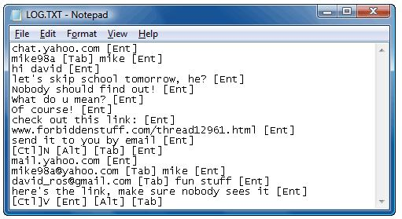

By Rohan
Today I am going to teach you “How to create an Autorun.inf file for USB drives or CD drives” so that it can execute programs. Programs can be viruses, keyloggers, RATs, or simply normal services that you want to execute automatically whenever a user open his/her pendrive or USB drive. It’s the easiest way to spread your programs to schedule, so that they can execute by themselves without any user interaction. Creating a simple or complex autorun file for your pendrive or USB drive.
Cross voting trend was massively seen among the MLAs of Bihar and Gujarat and this is a huge cause of concern because Congress said that in Gujarat, people and leaders and against BJP and in Bihar the “grand alliance” is intact. But after looking at the cross votes, will the Congress say that same dialogue again?
As quoted by Meira Kumar, it was a battle of between ideologies. Yes, the Congress ideology encourages insulting army chief but BJP upholds national interest. Congress ideology says to promote dynasty politics but BJP honours the hard worker in the party. Even in Delhi, there were 2 cross voting. So Kejriwal’s AAP need to introspect, blaming PM Modi always is not good in a democratic nation. Initially it was predicted that President Ram Nath Kovind would garner 63% votes but now he has secured more than 65% of votes. This is a massive win for NDA’s candidate Even 10 MLAs from Uttar Pradesh have cross voted in favour of BJP. 335 have voted for Ram Nath Kovind and perhaps SP MLAs have cross voted. Meira Kumar secured only 65 votes. Maharashtra’s 20 MLAs also cross voted in favour of BJP. So Congress is losing its position of a national party because it is unable to even hold its own party members from cross voting. This clearly says the there is no hurdle at all to curb PM Modi from re-electing in 2019 elections. So in the battle of ideology, the BJP’s nationalistic ideology emerges victorious.